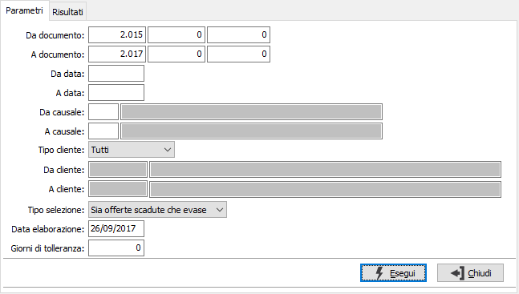
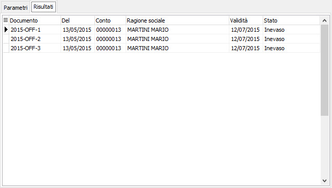

Eliminazione offerte
La procedura consente di eliminare le offerte che risultano completamente evase, scadute oppure entrambe.
La finestra si articola su due pagine, una per i parametri ed una per i risultati.

DA DOCUMENTO: tre campi per contenere rispettivamente anno, serie sezionale e numero del documento da cui si vuole iniziare la selezione.
A DOCUMENTO: tre campi per contenere rispettivamente anno, serie sezionale e numero del documento con cui si vuole concludere la selezione.
DA DATA: data documento da cui si vuole iniziare la selezione. Confermando a vuoto, la selezione inizia dalla prima data valida.
A DATA: data documento con cui si vuole concludere la selezione. Confermando a vuoto, la selezione termina con l'ultima data valida.
DA CAUSALE: codice della causale documento da cui si vuole iniziare la selezione. Confermando a vuoto, la selezione inizia dalla prima causale valida. Sul campo sono attive le funzioni di ricerca (F9).
A CAUSALE: codice della causale documento con cui si vuole iniziare la selezione. Confermando a vuoto, la selezione termina all’ultima causale valida. Sul campo sono attive le funzioni di ricerca (F9).
TIPO CLIENTE: consente di analizzare tutti i clienti, i clienti provvisori o quelli definitivi.
DA CLIENTE: eventuale codice del cliente, presente in anagrafica, da cui si vuole iniziare la selezione di analisi. Confermando a vuoto, la selezione inizia dal primo cliente valido. Sul campo sono attive le funzioni di ricerca (F9).
A CLIENTE: eventuale codice del cliente, presente in anagrafica, con cui si vuole terminare la selezione di analisi. Confermando a vuoto, la selezione termina con l’ultimo cliente valido. Sul campo sono attive le funzioni di ricerca (F9).
TIPO SELEZIONE: consente di decidere quale tipo di offerte eliminare: solo le offerte evase, solo le offerte scadute, sia le offerte scadute che evase. In relazione alla tipologia scelta si attivano i campi successivi.
DATA ELABORAZIONE: indica la data in cui viene effettuata l'eliminazione e viene utilizzata per determinare la scadenza delle offerte.
GIORNI DI TOLLERANZA: numero dei giorni per cui un'offerta, anche se scaduta, debba essere considerata ancora valida; ad esempio se un'offerta è scaduta da 15 giorni, ma nei giorni di tolleranza inserisco 30, questa sarà considerata ancora valida.
La pressione del pulsante Esegui dà inizio all'elaborazione, al termine viene visualizzata la pagina dei risultati dove sono riportati i documenti da eliminare.
La pressione sul pulsante Salva posto sulla toolbar determina la richiesta di conferma e l'eventuale esecuzione dell'eliminazione per i documenti visualizzati.
